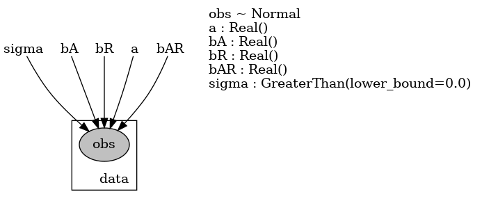

Chapter 4 Variational Inference
Meixi Chen
4.1 Introduction
Variational inference (VI) is an inference technique that is commonly used to approximate an intractable quantity such as a probability density. In the following, we introduce two scenarios where the VI is often used, one in a frequentist setting and the other in a Bayesian setting.
4.1.1 Frequentist Setting
The frequentist example is adapted from the one in Chen (2020). Consider the following IID observations \(Y_1,\ldots,Y_n\). Now assume that each \(Y_i\) is accompanied with an unobserved latent variable \(Z_i\). That is, the complete data is \((Y_1,Z_1),\ldots,(Y_n,Z_n)\), but we only observe the incomplete data \(Y_1,\ldots,Y_n\).
Assume that we know the parametric model for the complete data is \(p(y, z\mid \theta)\), and our interest lies in estimating \(\theta\). One way to do it is to maximize the observed log-likelihood \(\ell(\theta\mid y_1,\ldots,y_n) = \sum_{i=1}^n \log p(y_i\mid\theta)\), where \[\begin{equation} \tag{4.1} p(y_i\mid\theta)=\int p(y_i, z_i\mid \theta) \ dz_i. \end{equation}\] However, this integral is typically difficult to compute. Many techniques exist to deal with the problem of (4.1) (e.g., MCMC, Laplace approximation, EM). The VI is one such method to solve this problem, which writes \[\begin{equation} \tag{4.2} \begin{aligned} p(y\mid \theta) &= \int p(y, z\mid \theta)\ dz\\ &= \int \frac{p(y, z\mid \theta)}{\color{red}{q(z\mid \omega)}}\color{red}{q(z\mid \omega)} \ dz\\ &= \mathbb{E}_{Z}\left[\frac{p(y, z\mid \theta)}{\color{red}{q(z\mid \omega)}}\right] \end{aligned} \end{equation}\] where \(Z\sim q(z\mid \omega)\) and \(q(\cdot \mid\omega)\) is called the variational distribution and typically has an easy form (e.g. Normal distribution). All possible candidate variational distributions form the variational family \(\mathcal{Q}=\{q(\cdot\mid\omega): \ \omega \in \Omega\}\).
Given (4.2), we can compute the observed log-likelihood as \[\begin{equation} \tag{4.3} \begin{aligned} \ell(\theta\mid y) &= \log p(y\mid \theta)\\ &= \log \mathbb{E}_{Z}\left[\frac{p(y, z\mid \theta)}{q(z\mid \omega)}\right]\\ &\ge \mathbb{E}_{Z}\left[\log\frac{p(y, z\mid \theta)}{q(z\mid \omega)}\right] \text{ using Jensen's inequality}\\ &=\mathbb{E}_{Z}(\log p(y, z\mid \theta))-\mathbb{E}_{Z}(\log q(z\mid \omega))\\ &:= \mathrm{ELBO}(\omega,\theta\mid y) := \mathrm{ELBO}(q) \end{aligned} \end{equation}\] where \(\mathrm{ELBO}(q)\) is known as the Evidence Lower Bound.
Now, instead of maximizing \(\ell(\theta\mid y_1,\ldots,y_n)\), we can maxmize the ELBO via any numerical optimization algorithm, i.e., \[\begin{equation} \tag{4.4} (\hat{\omega}, \hat{\theta}) = \underset{\omega,\theta}{\mathrm{argmax}}\frac{1}{n}\sum_{i=1}^n \mathrm{ELBO}(\omega,\theta\mid y_i). \end{equation}\]
Important notes
The parametric form of \(q(\cdot \mid \omega)\) is up to the modeler. A common choice is Normal. When \(q(z \mid \omega)\) is multivariate, i.e., \(z, \omega\in\mathbb{R}^n\), it is common to use the mean-field variational family \(q(z\mid \omega)=\prod_{i=1}^n q(z_i\mid \omega_i)\).
The VI estimator \(\hat{\theta}_{\mathrm{VI}}\) generally does not converge to the MLE because \(\hat{\theta}_{\mathrm{VI}}\) depends on the choice of \(q(\cdot \mid \omega)\).
Uncertainty assessment
One way to assess the uncertainty of the VI estimator \(\tilde{\theta}_{\mathrm{VI}}\) is via bootstrapping.
Let \((Y_1^{(b)}, \ldots,Y_n^{(b)})\) be the \(b\)-th bootstrap sample from the original dataset, for \(b=1,\ldots, B\).
Given the bootstrap sample, we can compute the bootstrap VI estimate \(\hat{\theta}_{\mathrm{VI}}^{(b)}\).
After repeating the above procedure for \(B\) times, we obtain \(B\) bootstrap VI estimates: \(\hat{\theta}_{\mathrm{VI}}^{(1)}, \ldots, \hat{\theta}_{\mathrm{VI}}^{(B)}\).
The bootstrap estimates can be used to calculate the uncertainty of the original bootstrap estimator.
4.1.2 Bayesian Setting
In Bayesian statistics, the VI is often used as an alternative to the traditional MCMC sampling method to estimate the posterior distributions \(p(\theta\mid y)\).
Recall that, according to the Bayes’ rule, the posterior distribution is written as \[p(\theta\mid y) = \frac{p(y\mid \theta)p(\theta)}{\color{red}{p(y)}} = \frac{p(y\mid \theta)p(\theta)}{\int p(y\mid \theta) p(\theta)\ d\theta},\] where \(p(y\mid \theta)\) is the likelihood taking a known form and \(p(y)\) is a constant. Similar to the problem in (4.1), the integral \(p(y)=\int p(y\mid \theta) p(\theta)\ d\theta\) is typically intractable, which makes calculating the posterior difficult.
What the VI does in this case is to find a variational distribution \(q(\theta \mid \omega)\) such that it is close enough to the posterior distribution of interest \(p(\theta\mid y)\). How do we know a distribution is “close enough” to another?
The answer is using the Kullback-Leibler divergence \(\mathrm{KL}(Q\Vert P)\), which measures how different the probability distribution \(Q\) is from the reference distribution \(P\).
Therefore, the VI method looks for \(q(\theta \mid \omega)\) that minimizes \(\mathrm{KL}\big(q(\theta\mid \omega) \Vert p(\theta\mid y)\big)\), i.e., \[q^*(\theta \mid \omega) = \underset{q(\theta\mid\omega)}{\mathrm{argmin}} \mathrm{KL}\big(q(\theta\mid \omega) \Vert p(\theta\mid y)\big).\]
The KL divergence is written as \[\begin{equation} \tag{4.5} \begin{aligned} \mathrm{KL}\big(q(\theta\mid \omega) \Vert p(\theta\mid y)\big) &= \mathbb{E}_{q(\cdot \mid \omega)}[\log q(\theta\mid \omega)]-\mathbb{E}_{q(\cdot \mid \omega)}[\log p(\theta\mid y)]\\ &= \mathbb{E}_{q(\cdot \mid \omega)}[\log q(\theta\mid \omega)]-\mathbb{E}_{q(\cdot \mid \omega)}\left[\log \frac{p(\theta, y)}{p(y)}\right]\\ &= \underbrace{\mathbb{E}_{q(\cdot \mid \omega)}[\log q(\theta\mid \omega)]-\mathbb{E}_{q(\cdot \mid \omega)}[\log p(\theta, y)]}_{-\mathrm{ELBO(q)}} + \underbrace{\color{red}{\log p(y)}}_{\text{constant}} \end{aligned} \end{equation}\]
Noting that \(\log p(y)\) is a constant, minimizing the KL divergence (4.5) is in fact equivalent to minimizing the nonconstant part of (4.5): \[\mathbb{E}_{q(\cdot \mid \omega)}[\log q(\theta\mid \omega)]-\mathbb{E}_{q(\cdot \mid \omega)}[\log p(\theta, y)].\] Then we notice that it is in fact the negative of the ELBO, so minimizing (4.5) is in turn equivalent to maximizing the ELBO: \[\mathrm{ELBO}(q) = \mathbb{E}_{q(\cdot \mid \omega)}[\log p(\theta, y)]-\mathbb{E}_{q(\cdot \mid \omega)}[\log q(\theta\mid \omega)].\]
Therefore, we can estimate \(\omega\) as \[\hat{\omega} = \underset{\omega}{\mathrm{argmax}} \ \mathrm{ELBO}(q) = \underset{\omega}{\mathrm{argmax}} \ \mathrm{ELBO}(\omega\mid y).\]
Finally, the posterior of interest is approximated by \[p(\theta\mid y) \approx q(\theta \mid \hat{\omega}).\]
Important note
Similar to the frequentist setting, we need to pick the distributional form of \(q(\cdot \mid \omega)\).
The posterior distribution obtained this way is an approximation rather than the truth, whereas MCMC methods guarantees that the Monte Carlo samples converge to the true posterior distribution.
Takeaway
- Only use the VI to estimate the posterior if the dimension of the posterior is too high for sampling, or the model is too complex for MCMC methods to run within a reasonable amount of time (within a day).
4.2 Example: Mixture of Gaussians
This example is taken from a famous VI tutorial paper by Blei, Kucukelbir, and McAuliffe (2017). Consider the following Gaussian mixture model: \[\begin{equation} \tag{4.6} \begin{aligned} \mu_k &\sim \mathcal{N}(0, \sigma^2), \ \ & k=1,\ldots, K,\\ c_i &\sim \mathrm{Categorical}(1/K, \ldots, 1/K), \ \ & i=1,\ldots, n,\\ x_i|c_i, \boldsymbol{\mu} &\sim \mathcal{N}(c_i^T\boldsymbol{\mu}, 1), \ \ & i=1,\ldots,n, \end{aligned} \end{equation}\] where the prior variance \(\sigma^2\) is known, and \(c_i=(0,0,\ldots,1,\ldots,0)\) is one-hot encoding.
The parameters of interest are the mean parameters \((\mu_1,\ldots,\mu_K)\) and the cluster parameters \((c_1,\ldots,c_n)\). We propose to use the mean-field variational family \(q(\boldsymbol{\mu}, \boldsymbol{c})=\prod_{i=1}^Kq(\mu_k)\prod_{i=1}^nq(c_i)\), where \[\begin{equation} \tag{4.7} \begin{aligned} q(\mu_k\mid m_k, s_k^2) &= \mathcal{N}(m_k, s_k^2), \ \ & k=1,\ldots, K\\ q(c_i\mid \phi_i) &= \mathrm{Categorical}(\phi_{i1}, \ldots, \phi_{iK}), \ \ & i=1,\ldots n. \end{aligned} \end{equation}\]
Again, let \(\omega=(m, s, \phi)\) denote all the variational parameters, and let \(\theta=(\mu_1,\ldots,\mu_K, c_1,\ldots,c_n)\) denote all the parameters of interest. Then the ELBO is written as \[\begin{equation} \tag{4.8} \begin{aligned} \mathrm{ELBO}(q) &= \color{blue}{\mathbb{E}_{q(\cdot \mid \omega)}[\log p(\theta, x)]}-\color{purple}{\mathbb{E}_{q(\cdot \mid \omega)}[\log q(\theta \mid \omega)]}\\ &= \color{blue}{\sum_{k=1}^K \mathbb{E}[\log p(\mu_k); m_k, s_k^2]} \\ & \ \ \ \ \ \ \color{blue}{+\sum_{i=1}^n \left(\mathbb{E}[\log p(c_i); \phi_i] + \mathbb{E}[\log p(x_i\mid c_i, \mu); \phi, m, s^2]\right)} \\ & \ \ \ \ \ \ \color{purple}{-\sum_{i=1}^n\mathbb{E}[\log q(c_i\mid \phi_i)] - \sum_{k=1}^K \mathbb{E}[\log q(\mu_k\mid m_k, s_k^2)]} \end{aligned} \end{equation}\] Note that \(\mathbb{E}[a ; b]\) specifies the quantity of interest \(a\) depends on the variational parameter \(b\). Each of the above term can be computed in closed form (but omitted here). The next question is, how do we maximize the ELBO?
4.2.1 Coordinate Ascent Mean-Field Variational Inference
The coordinate ascent variational inference (CAVI) is commonly used to solve this optimization problem. It is particularly convenient for the mean-field variational family.
Results: (Blei, Kucukelbir, and McAuliffe 2017)
Let the full conditional of \(\theta_j\) be \(p(\theta_j\mid \boldsymbol{\theta}_{-j},x)\). When all variational distributions \(q(\theta_{\ell})\) for \(\ell\neq j\) are fixed, the optimal \(q(\theta_j)\) is proportionate to the exponentiated expected log complete conditional: \[\begin{equation} \tag{4.9} q^*(\theta_j) \propto \exp\left\{\mathbb{E}_{-j}[\log p(\theta_j\mid\boldsymbol{\theta}_{-j}, x)]\right\} \end{equation}\]
This result is used to formulate the CAVI algorithm as follows.
Algorithm: CAVI
while the ELBO has not converged do
for \(j\in\{1,\ldots,m\}\) do
Set \(q_j(\theta_j) \propto \exp\left\{\mathbb{E}_{-j}[\log p(\theta_j\mid\boldsymbol{\theta}_{-j}, x)]\right\}\)
end
Compute \(\mathrm{ELBO}(q)\)
end
Return \(q(\boldsymbol{\theta})\)
For the mixture of Gaussians example, Blei, Kucukelbir, and McAuliffe (2017) has derived the full conditionals and computed the updating rules for all variational parameters: \[\begin{equation} \tag{4.10} \begin{aligned} \phi_{ik} &\propto \exp\{\mathbb{E}[\mu_k;m_k,s_k^2]x_i - \mathbb{E}[\mu_k^2;m_k,s_k^2]/2\} \ \ \text{(normalize afterwards)}\\ m_k &= \frac{\sum_{i}^n \phi_{ik}x_i}{1/\sigma^2 + \sum_{i=1}^n \phi_{ik}} \\ s_k^2 &= \frac{1}{1/\sigma^2 +\sum_{i=1}^n \phi_{ik}} \end{aligned} \end{equation}\]
Then the full CAVI algorithm for the Gaussian mixture model is given below.
Algorithm: CAVI for Gaussian mixture model
while the ELBO has not converged do
for \(i\in\{1,\ldots,n\}\) do
Set \(\phi_{ik} \propto \exp\{\mathbb{E}[\mu_k;m_k,s_k^2]x_i - \mathbb{E}[\mu_k^2;m_k,s_k^2]/2\}\)
end
for \(k\in\{1,\ldots,K\}\) do
Set \(m_k = \frac{\sum_{i}^n \phi_{ik}x_i}{1/\sigma^2 + \sum_{i=1}^n \phi_{ik}}\)
Set \(s_k^2 = \frac{1}{1/\sigma^2 +\sum_{i=1}^n \phi_{ik}}\)
end
Compute \(\mathrm{ELBO}(\boldsymbol{m},\boldsymbol{s}^2, \boldsymbol{\phi})\)
end
return \(q(\mu_k \mid m_k, s_k^2)\) and \(q(c_k\mid \phi_i)\)
4.3 Example: Stochastic Variational Inference using Pyro in Python
As we have seen in the previous example, to use CAVI, we need to compute (and code up) the ELBO and the full conditionals in closed-form. This will be a pain when we have more complex models. When we perform statistical inference in practice, we typically only need to provide a model form. The model can be as simple as a formula such as Response ~ var1 + var2 in the glm package, or in a more complicated form such as the Stan language when we perform MCMC sampling using the rstan package. We almost never needed to derive any math!
We can do the same with the VI. That is, we only need to provide the model formulation, and then let the software do the tedious derivation for us. However, there does not exist an automatic and versatile R package for VI. Therefore, we will look at Pyro, a probabilistic programming language (PPL) written in Python, which is a very convenient interface for implementing VI for complex models. Note that Pyro is supported by the popular deep learning framework Pytorch on the backend, so models written in Pyro can be easily extended to incorporate neural network architectures. We will go over a simpler example provided by the Pyro team itself. All the following code is in Python and originally provided here.
To install pyro, simply run pip install pyro-ppl in your terminal. First, we import the required packages and set up some system parameters.
import os
import logging
import time
import torch
import numpy as np
import pandas as pd
import seaborn as sns # for plotting
import matplotlib.pyplot as plt # for plotting
import pyro
import pyro.distributions as dist
import pyro.distributions.constraints as constraints
pyro.enable_validation(True)
pyro.set_rng_seed(1)
logging.basicConfig(format='%(message)s', level=logging.INFO)
plt.style.use('default')The dataset we will look at in this example studies the relationship between geography and national income. Specifically, we will examine how this relationship is different for nations in Africa and outside of Africa. It was found that, outside of Africa, bad geography is associated with lower GPD, whereas the relationship is reversed in Africa.
Response variable
rgdppc_2000: Real GPD per capita in 2000 (will be log transformed for analysis).Predictor
rugged: The Terrain Ruggedness Index which measures the topographic heterogeneity of a nation.Predictor
cont_africa: Whether the nation is in Africa.
The following plots show the relationships between log GDP and ruggedness index for Non-African nations and African nations, respectively.
DATA_URL = "https://d2hg8soec8ck9v.cloudfront.net/datasets/rugged_data.csv"
data = pd.read_csv(DATA_URL, encoding="ISO-8859-1")
df = data[["cont_africa", "rugged", "rgdppc_2000"]]
df = df[np.isfinite(df.rgdppc_2000)]
df["rgdppc_2000"] = np.log(df["rgdppc_2000"]) # log transform the highly-skewed GDP data
train = torch.tensor(df.values, dtype=torch.float)
is_cont_africa, ruggedness, log_gdp = train[:, 0], train[:, 1], train[:, 2]
fig, ax = plt.subplots(nrows=1, ncols=2, figsize=(12, 6), sharey=True)
african_nations = df[df["cont_africa"] == 1]
non_african_nations = df[df["cont_africa"] == 0]
sns.scatterplot(x=non_african_nations["rugged"],
y=non_african_nations["rgdppc_2000"],
ax=ax[0])
ax[0].set(xlabel="Terrain Ruggedness Index",
ylabel="log GDP (2000)",
title="Non African Nations")
sns.scatterplot(x=african_nations["rugged"],
y=african_nations["rgdppc_2000"],
ax=ax[1])
ax[1].set(xlabel="Terrain Ruggedness Index",
ylabel="log GDP (2000)",
title="African Nations")
plt.show()A simple model to capture the relationship is \[Y = \alpha + \beta_aX_a + \beta_rX_r + \beta_{ar} X_aX_r +\epsilon, \ \ \epsilon\sim\mathcal{N}(0,\sigma^2)\] where \(Y\) is the log GDP, \(X_a\) is an indicator for whether the nation is in Africa, \(X_r\) is the ruggedness index, and \(\epsilon\) is the noise term.
This model is defined as freq_model in the following, where the parameters and the observations are specified using pyro.param and pyro.sample, respectively. A cool feature of Pyro is that its render_model() function allows us to visualize the model.
def freq_model(is_cont_africa, ruggedness, log_gdp=None):
a = pyro.param("a", lambda: torch.randn(()))
b_a = pyro.param("bA", lambda: torch.randn(()))
b_r = pyro.param("bR", lambda: torch.randn(()))
b_ar = pyro.param("bAR", lambda: torch.randn(()))
sigma = pyro.param("sigma", lambda: torch.ones(()), constraint=constraints.positive)
mean = a + b_a * is_cont_africa + b_r * ruggedness + b_ar * is_cont_africa * ruggedness
with pyro.plate("data", len(ruggedness)):
return pyro.sample("obs", dist.Normal(mean, sigma), obs=log_gdp)
pyro.render_model(freq_model, model_args=(is_cont_africa, ruggedness, log_gdp),
render_distributions=True, render_params=True, filename="freq_model.png");
We can also define a Bayesian version of it called bayes_model as follows. This model simply replaces pyro.param with pyro.sample, so that the parameters are viewed as random variables following some (prior) distributions. Similarly, we call render_model() to visualize it. Between the Bayesian model and the frequentist model, we will use the former for demonstration here.
def bayes_model(is_cont_africa, ruggedness, log_gdp=None):
a = pyro.sample("a", dist.Normal(0., 10.))
b_a = pyro.sample("bA", dist.Normal(0., 1.))
b_r = pyro.sample("bR", dist.Normal(0., 1.))
b_ar = pyro.sample("bAR", dist.Normal(0., 1.))
sigma = pyro.sample("sigma", dist.Uniform(0., 10.))
mean = a + b_a * is_cont_africa + b_r * ruggedness + b_ar * is_cont_africa * ruggedness
with pyro.plate("data", len(ruggedness)):
return pyro.sample("obs", dist.Normal(mean, sigma), obs=log_gdp)
pyro.render_model(bayes_model, model_args=(is_cont_africa, ruggedness, log_gdp), render_distributions=True, filename="bayes_model.png");
In the context of Pyro, the variational distribution is called a “guide”. To specify the variational family we want, we need to define a guide program as follows. The code is very similar to that of the model. The custom guide we define below uses mean-field variational inference, i.e., all parameters have independent variational distributions in the form of Gaussian.
\(q(\alpha\mid \mu_\alpha, \sigma^2_\alpha) = \mathcal{N}(\mu_\alpha, \sigma^2_\alpha)\)
\(q(\beta_a\mid \mu_{\beta_a}, \sigma^2_{\beta_a}) = \mathcal{N}(\mu_{\beta_a}, \sigma^2_{\beta_a}a)\)
\(q(\beta_r\mid \mu_{\beta_r}, \sigma^2_{\beta_r}) = \mathcal{N}(\mu_{\beta_r}, \sigma^2_{\beta_r})\)
\(q(\beta_{ar}\mid \mu_{\beta_{ar}}, \sigma^2_{\beta_{ar}}) = \mathcal{N}(\mu_{\beta_{ar}}, \sigma^2_{\beta_{ar}})\)
\(q(\sigma^2\mid \mu_\sigma, \sigma^2_\sigma) = \mathcal{N}(\mu_\sigma, \sigma^2_\sigma)\)
def custom_guide(is_cont_africa, ruggedness, log_gdp=None):
a_loc = pyro.param('a_loc', lambda: torch.tensor(0.))
a_scale = pyro.param('a_scale', lambda: torch.tensor(1.),
constraint=constraints.positive)
sigma_loc = pyro.param('sigma_loc', lambda: torch.tensor(1.),
constraint=constraints.positive)
weights_loc = pyro.param('weights_loc', lambda: torch.randn(3))
weights_scale = pyro.param('weights_scale', lambda: torch.ones(3),
constraint=constraints.positive)
a = pyro.sample("a", dist.Normal(a_loc, a_scale))
b_a = pyro.sample("bA", dist.Normal(weights_loc[0], weights_scale[0]))
b_r = pyro.sample("bR", dist.Normal(weights_loc[1], weights_scale[1]))
b_ar = pyro.sample("bAR", dist.Normal(weights_loc[2], weights_scale[2]))
sigma = pyro.sample("sigma", dist.Normal(sigma_loc, torch.tensor(0.05)))
return {"a": a, "b_a": b_a, "b_r": b_r, "b_ar": b_ar, "sigma": sigma}
pyro.render_model(custom_guide, model_args=(is_cont_africa, ruggedness, log_gdp), render_params=True, filename="custom_guide.png");
To implement variational inference in Pyro, we use its stochastic variational inference functionality pyro.infer.SVI(), which takes in four arguments:
Model:
bayes_modelGuide (Variational distribution):
custom_guideELBO: We do not need to compute the explicit ELBO. It can be defined by calling
pyro.infer.Trace_ELBO(), and this will automatically compute ELBO under the hood for us given model and guide.Optimizer: Any optimizer can do, but a popular choice is the Adam optimizer given by
pyro.optim.Adam(). Adam is a gradient-based optimization algorithm that computes adaptive learning rates for different parameters.
The plot below shows the ELBO loss (negative ELBO) as a function of the step index. We see that the optimization procedure has converged after about 500 steps.
pyro.clear_param_store()
auto_guide = pyro.infer.autoguide.AutoNormal(bayes_model)
adam = pyro.optim.Adam({"lr": 0.02})
elbo = pyro.infer.Trace_ELBO()
svi = pyro.infer.SVI(bayes_model, auto_guide, adam, elbo)
losses = []
vi_start = time.time()
for step in range(1000):
loss = svi.step(is_cont_africa, ruggedness, log_gdp)
losses.append(loss)
if step % 100 == 0:
logging.info("Elbo loss: {}".format(loss))## Elbo loss: 694.9404839277267
## Elbo loss: 524.3822101950645
## Elbo loss: 475.668176651001
## Elbo loss: 399.99088364839554
## Elbo loss: 315.23277366161346
## Elbo loss: 254.76771301031113
## Elbo loss: 248.237025141716
## Elbo loss: 248.42669039964676
## Elbo loss: 248.46450036764145
## Elbo loss: 257.41463327407837vi_end = time.time()
plt.figure(figsize=(5, 2))
plt.plot(losses)
plt.xlabel("SVI step")
plt.ylabel("ELBO loss")
plt.show()
Below is the time taken to optimize the ELBO using the VI method.
print(vi_end-vi_start)## 5.5414955615997314Then we can print out the estimated variational parameters (\(\boldsymbol{\omega}\)), which are the mean and variance of each variational Normal distribution.
for name, value in pyro.get_param_store().items():
print(name, pyro.param(name).data.cpu().numpy())## AutoNormal.locs.a 9.173145
## AutoNormal.scales.a 0.07036691
## AutoNormal.locs.bA -1.847466
## AutoNormal.scales.bA 0.14070092
## AutoNormal.locs.bR -0.1903212
## AutoNormal.scales.bR 0.044044245
## AutoNormal.locs.bAR 0.35599768
## AutoNormal.scales.bAR 0.07937442
## AutoNormal.locs.sigma -2.205863
## AutoNormal.scales.sigma 0.06052672Given the variational parameters, we can now sample from the variational distributions of the parameters of interest. The variational distributions can be treated as approximated posterior distributions of these parameters. In particular, we can look at the slopes (log GDP versus ruggedness index) for Non-African nations and African nations.
Non-African nations: slope = \(\beta_r\)
African nations: slope = \(\beta_r+\beta_{ar}\)
We will take 800 samples from \(q(\beta_{r}\mid \hat{\mu}_{\beta_{r}}, \hat{\sigma}^2_{\beta_{r}})\) and \(q(\beta_{ar}\mid \hat{\mu}_{\beta_{ar}}, \hat{\sigma}^2_{\beta_{ar}})\). The histograms of the samples are plotted side-by-side below.
with pyro.plate("samples", 800, dim=-1):
samples = auto_guide(is_cont_africa, ruggedness)
gamma_within_africa = samples["bR"] + samples["bAR"]
gamma_outside_africa = samples["bR"]
fig = plt.figure(figsize=(10, 6))
plt.hist(gamma_within_africa.detach().numpy(), label="Arican nations");
plt.hist(gamma_outside_africa.detach().numpy(), label="Non-Arican nations");
fig.suptitle("Density of Slope : log(GDP) vs. Terrain Ruggedness");
plt.xlabel("Slope of regression line")
plt.legend()
plt.show()
Finally, we can compare the VI to MCMC (NUTS, to be specific).
from pyro.infer import MCMC, NUTS
mcmc = MCMC(NUTS(bayes_model), num_samples=1000, warmup_steps=1000, disable_progbar=True)
mc_start = time.time()
mcmc.run(is_cont_africa, ruggedness, log_gdp)
mc_end = time.time()
mc_samples = mcmc.get_samples()
mcmc.summary()##
## mean std median 5.0% 95.0% n_eff r_hat
## a 9.19 0.14 9.19 8.95 9.42 537.96 1.00
## bA -1.86 0.23 -1.86 -2.22 -1.48 497.48 1.00
## bAR 0.36 0.13 0.36 0.12 0.55 563.94 1.00
## bR -0.19 0.08 -0.19 -0.31 -0.05 507.07 1.00
## sigma 0.95 0.05 0.95 0.86 1.03 648.89 1.00
##
## Number of divergences: 0Below is the time taken to draw 2000 MCMC samples (including 1000 warmups). We can see MCMC is almost an order of magnitude slower than the VI.
print(mc_end-mc_start)## 38.696908712387085We can also plot the histograms of the MCMC samples of the two slopes. Compared to the histograms obtained using the VI, these don’t look much different.
mc_slope_within_africa = mc_samples["bR"] + mc_samples["bAR"]
mc_slope_outside_africa = mc_samples["bR"]
fig = plt.figure(figsize=(10, 6))
plt.hist(mc_slope_within_africa.detach().numpy(), label="Arican nations");
plt.hist(mc_slope_outside_africa.detach().numpy(), label="Non-Arican nations");
fig.suptitle("MCMC Estimated Density of Slope : log(GDP) vs. Terrain Ruggedness");
plt.xlabel("Slope of regression line")
plt.legend()
plt.show()
4.4 Takeaways
In a Bayesian example, the VI is an order of magnitude faster than MCMC while giving similar results. However, the example uses a very simple Normal-Normal model, and the variational distribution employed is also Normal. This could be why the VI performs so well. When the true posterior is multi-model or asymmetric, it is unlikely that using a mean-field Gaussian variational distribution will give as accurate results.
Since the VI is an optimization-based algorithm, it is possible that the ELBO has not converged to a local minimum (in more complex modelling settings). Diagnostics are required for this.
The VI is known to underestimate model uncertainty. It is not surprising since it is an approximate inference method. Unless your model is so complicated (e.g., multiple hierarchies, neural nets) that traditional frequentist fitting procedures (
lme4,glm) break down or MCMC methods take forever, the VI would not be your first choice.